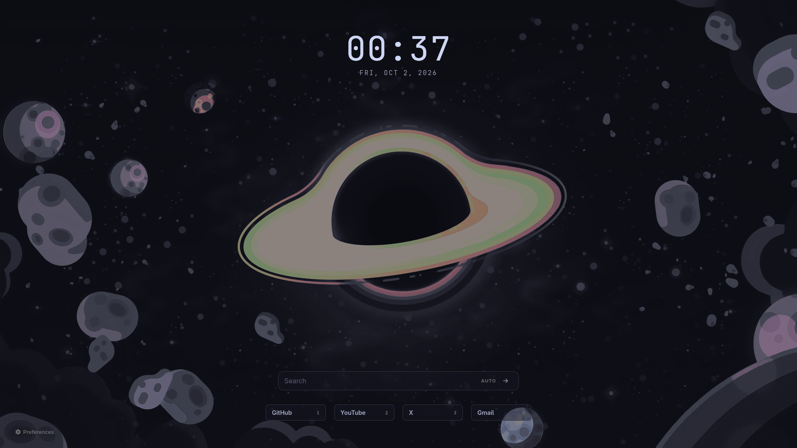
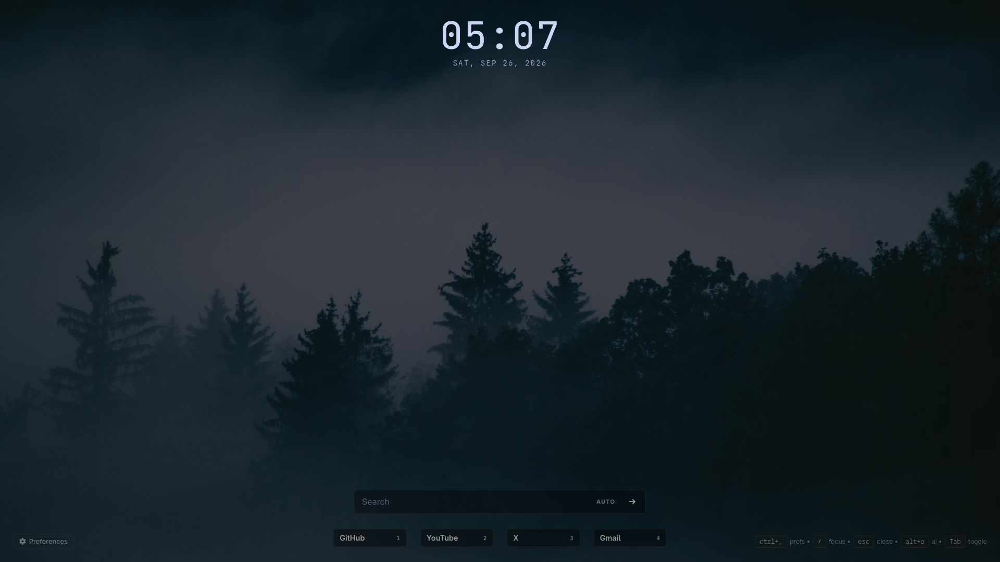
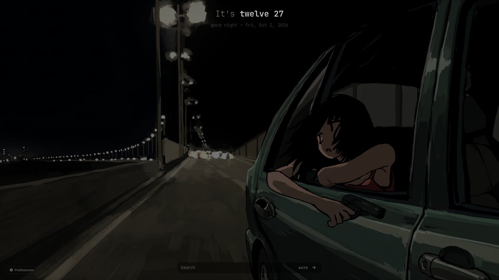

Catppuccin Mocha Preset
Download

Misty Forest Default Preset
Download

Night Drive Preset
Download
Preset files for
Anoxle Startpage
Select Device:
This is the default theme. You can get it by resetting all defaults in the Data & Version settings tab.
Download for Desktop
Download for Mobile
Cancel